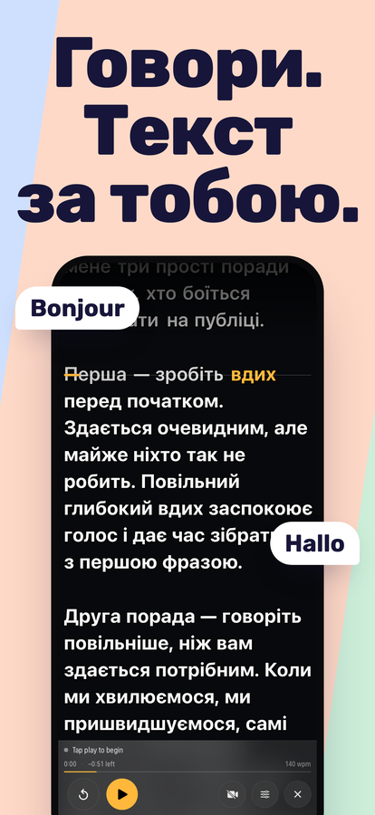
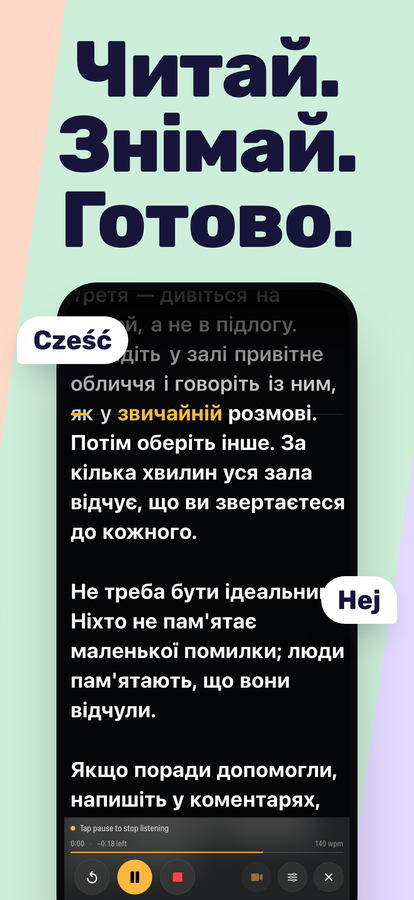
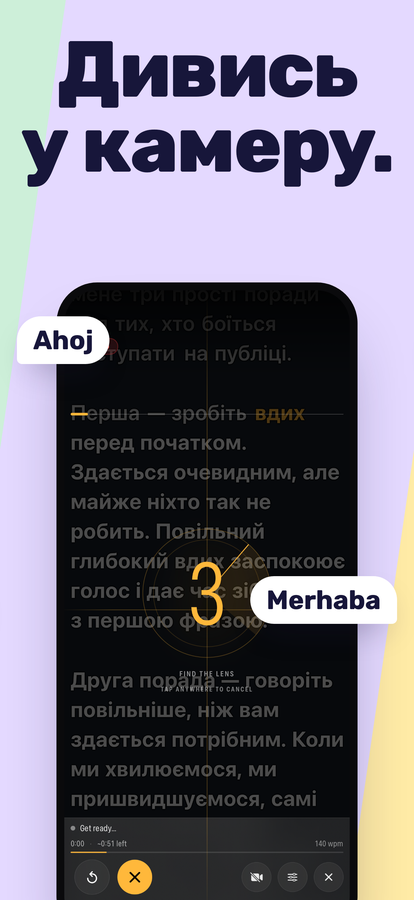
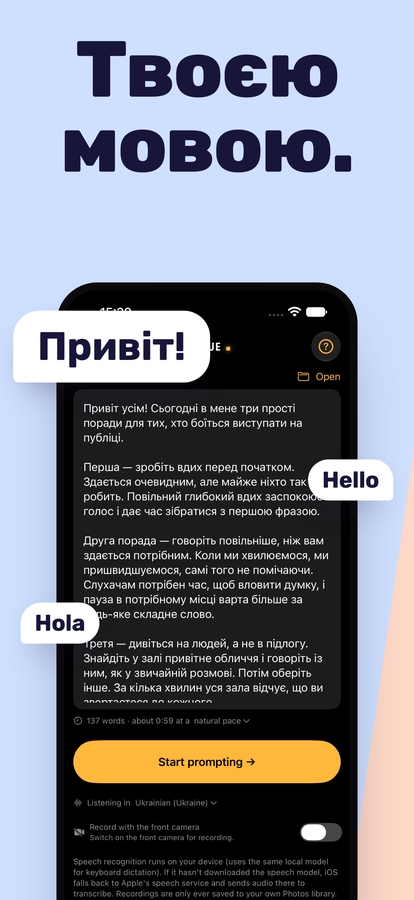

Телесуфлер, який іде за твоїм голосом.
Говори — і текст прокручується разом із тобою. Зупинись — і він чекає. Перефразуй, пропусти слово або почни фразу знову — він не втратить місце, бо слухає те, що ти насправді кажеш, а не крутиться з фіксованою швидкістю, за якою тобі доводиться встигати.
Завантажити в App StoreiPhone та iPad · iOS 16 або новіша · Одна покупка, без підписки, без облікового запису




Що він уміє
Іде за твоїм голосом
Розпізнавання мовлення зіставляє те, що ти кажеш, із твоїм текстом і тримає поточний рядок на рядку читання. Роби скільки завгодно пауз. Щоб зсунутися на рядок угору чи вниз, не торкаючись телефона, скажи «scroll up» або «scroll down» (голосові команди — англійською).
Слухає твоєю мовою
On Cue визначає мову відкритого сценарію і слухає тебе цією мовою — українською, італійською або будь-якою, яку розпізнає твій iPhone. Під час першого запуску він починає з мови твого iPhone.
Записує, поки ти читаєш
Один дотик — і він починає слухати й знімати одночасно. Запис на фронтальну камеру з текстом поверх зображення зберігається просто в застосунок «Фото» з тією роздільною здатністю та частотою кадрів, які підтримує твій пристрій.
Витримує імпровізацію
Відійти від тексту — це нормально, а не помилка. Перестрибни вперед або вигадай фразу на ходу — він знову тебе знайде, а не стоятиме й чекатиме слово, якого ти так і не сказав.
Створений для читання
Налаштовувані розмір тексту та поля, чотири варіанти вирівнювання, рядок читання, який можна перетягнути ближче до об’єктива, і контраст для кожного слова, щоб текст читався навіть на світлому тлі.
Знає, скільки це триває
Підрахунок слів і орієнтовна тривалість просто під час набору. Витрачений час, залишок часу та твій темп під час мовлення — за твоєю справжньою швидкістю, а не за припущенням.
Лишається на твоєму пристрої
On Cue нікуди не надсилає ні твій текст, ні твої записи. Розпізнавання мовлення виконується на самому пристрої всюди, де це дозволяє iOS.